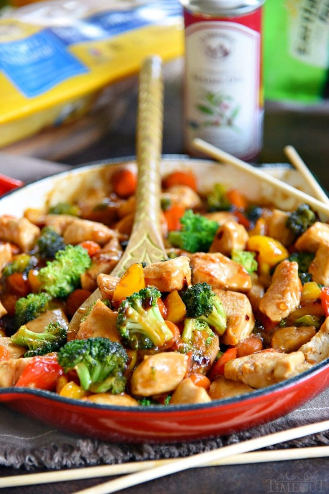

Chicken Stir Fry Recipe

Ingredients
- 1 lb boneless, skinless chicken breast
- salt and pepper
- 2 tbsp olive oil
- 2 cups broccoli florets
- 1/2 yellow bell pepper
- 1/2 red bell pepper
- 1/2 cup baby carrots
- 2 tsp minced ginger
- 2 garlic cloves
- 1 tbsp corn starch
- 2 tbsp cold water
- 1/4 cup chicken broth
- 3 tbsp soy sauce
- 1/4 cup honey
- 1 tbsp toasted sesame oil
- 1/2 tsp crushed red pepper flakes
Directions
- In a medium bowl, whisk together corn starch and water Add remaining
ingredients (chicken broth, soy sauce, honey, toasted sesame oil, and red pepper
flakes) and whisk to combine. Set aside.
- Add 1 tbsp of olive oil to a large skillet or wok and heat over medium high
heat.
- Add chicken and season with salt and pepper. Cook for
3-5 minutes or until cooked through. Remove from skillet.
- Reduce heat to medium and add remaining tbsp of oil to the skillet.
- Add broccoli, bell pepper, and carrots and cook, stirring occasionally, just until crisp
tender. Add ginger and garlic and cook for an additional minute.
- Add chicken back into skillet and stir to combine.
- Whisk stir fry sauce and pour over chicken and vegetables and stir gently to
combine.
- Bring to a boil, stirring occasionally, and let boil for 1 minute.
- Serve with rice and/or chow mein if desired.
Mom on Timeout
Contact Me
Email Me!
The University of Montana
32 Campus Dr
Missoula, MT 59812